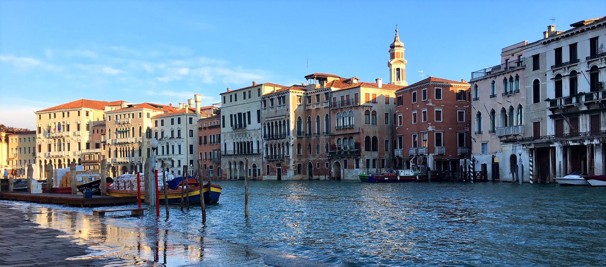

Venice
Venice, Italy - December 9, 2017
For my last big international trip, I went all out and decided to go to Italy. I went with a friend named Pi from my Database Systems class. We flew out to Venice on Sunday afternoon and arrived around dinnertime, but we had to wait for about an hour until dinner because we had to take a water bus from the mainland to the island itself. Our bed and breakfast was about 5 minutes from Rialto bridge, which made it easy to find when trying to get back at night. We had a pretty relaxed evening on Sunday because I had planned really busy days for Monday and Tuesday.
Monday was a packed day. After a delicious breakfast (I definitely indulged in croissants while in Italy), we walked over to Rialto bridge to take a few photos. On our way, I got some beautiful shots of the grand canal. We then struggled to navigate the narrow walkways to get to Campo San Geremia, the starting location of our free walking tour. We got there with about 15 minutes to spare, so I did a little souvenir shopping (I did a lot of souvenir shopping in Venice but who could blame me? Venice was amazing). There is a common theme for souvenirs - carnival masks. Carnival in early modern Venice went on for basically 6 months of the year, where people could wear a mask to hide identity when they were doing scandalous things. Unlike the masks that you can find nowadays in Venetian stores, there used to be only black or white masks in a few different designs. I decided to get a very decorated small purple mask since I wasn't in 17th century Venice. The free walking tour, starting right outside the shop where I bought the mask, only had 3 people. It was really enlightening to learn more about Venice and Venetian history.
Venice was built by refugees who were escaping Attila the Hun. Because the land was basically marshland, there are large poles in the clay below Venice for stabilization, with bricks on top of that to build the buildings and bridges. The reason Venice is sinking (it has sunk about 20 cm since the 1980s) is that rising sea levels have chipped away at the bricks holding the buildings up. The saltwater erosion cannot be prevented, especially when the city floods during the winter. We were lucky to come when it wasn't flooded, but there could be up to a foot of water covering Venice when there are heavy rains in the winter. The highest level of water was in 1966, which forced people to not live on the ground floor of buildings anymore.
After our walking tour, we were freezing so we found lunch in an indoor cafe. You'd think Italy would be slightly warm in the winter, but Venice was basically mostly water, so it was colder and more humid than Edinburgh. After a good lunch (my first of 3 pizzas during this trip...), we went to the Piazza San Marco to take photos and explore the Basilica. As we had passed a gondola station on our way to San Marco, we decided to head back there and take a gondola ride around Venice. I really enjoyed the ride, we got to see Venice from a whole new perspective. The gondolier gave us a really fuzzy blanket for the ride and I was so happy to keep warm while we floated around Venice. He was also very educational and told us about certain buildings and Venice in general. We passed by a restaurant with the Venetian flag hanging outside. The Venetian flag has a lot of peculiar features. The winged lion is actually Saint Mark's emblem, and St. Mark is the patron saint of Venice. At the bottom of the flag there are 6 pendants, which represent the 6 districts of Venice. What is really interesting is that Venice is actually a lagoon made up of 113 islands (hence why there are so many bridges in Venice).
When the gondola ride ended, we headed back to San Marco to go visit the Palazzo Ducale (Doge's Palace). The Republic of Venice was a sovereign state from the 8th to the 18th century, when Napoleon invaded and dissolved the Republic. During the Republic, Venetians would elect a Doge (Duke) for life from one of the rich families of Venice. When the Doge died, the family was excluded from the next election in order to prevent a continuous ruling family. So we got to visit the palace where the Doge lived. As well as being the Doge's residence, the palace housed political institutions of the Republic of Venice until the Napoleonic occupation of the city in 1797, when its role inevitably changed. Venice was subjected first to French rule, then to Austrian, and finally in 1866 it became part of Italy. Interestingly, because of this change of ruling authorities, Venice developed its own dialect that combined aspects of Italian, French, and German language. Over this period, the palace was occupied by various administrative offices. We visited the Doge's apartments, institutional chambers, armory, and the prison.
We were absolutely exhausted after visiting the Palazzo Ducale, so we mainly souvenir shopped (rather, I souvenir shopped) and then we got dinner. I tried a Spritz, which is a Venetian drink with bubbly Prosecco, Aperol (an orange-based aperitif), then topped with sparkling water, and a wedge of orange. It was a nice evening and we got some really good photos of the sunset at San Marco. It was an early evening because we were super tired and had to get up early on Tuesday for a 9am train to Florence. See my next blog post on my adventures in Florence.
Cheers!
- Caileigh Marshall